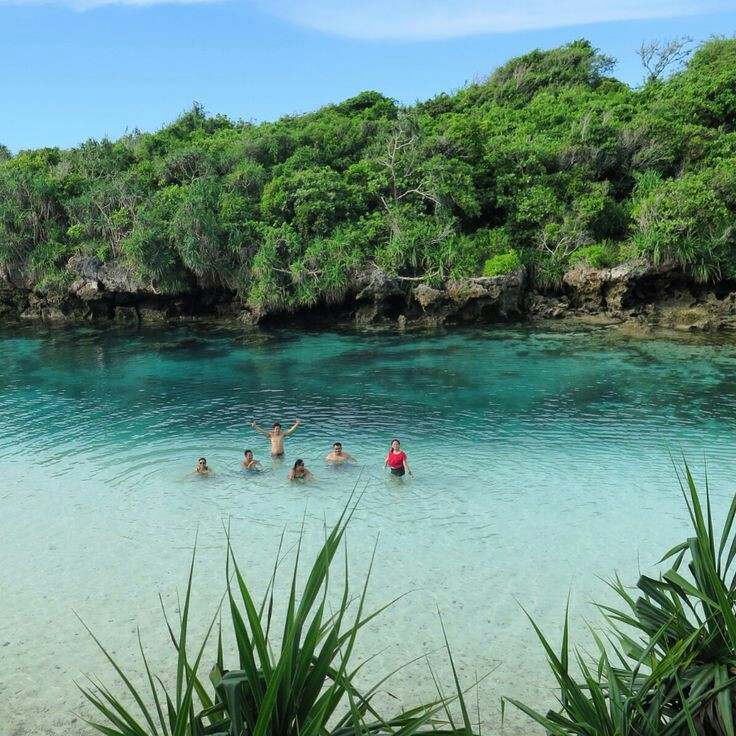

Danau Weekuri
Deskripsi
Terletak di Desa Kalenarogo, Kecamatan Kodi Utara,
Kabupaten Sumba Barat Daya, Provinsi Nusa Tenggara Timur, Danau Weekuri mulai ramai dikunjungi oleh para wisatawan
belakangan ini. Danau Weekuri yang berwarna hijau kebiru-biruan ini merupakan danau yang sangatlah unik jika dibandingkan dengan
danau-danau pada umumnya di Indonesia karena kandungan airnya yang asin dan payau. Kenapa asin? Karena sebenarnya danau ini adalah
sebuah laguna yang terbentuk dari air lautan lepas yang berada di kisaran danau. Air tersebut masuk dari celah-celah bebatuan yang
berada di gugusan karang sekitaran danau. Selain sifat air payau yang dibawa dari laut, uniknya lagi di danau ini terdapat beberapa
titik sumber mata air yang membuat gradasi warna air di danau ini bervariatif, yaitu ada yang berwarna biru cerah, biru sedikit kehijau-
hijauan bahkan ada yang rasanya hangat dan ada yang dingin. Keunikannya sangat jarang ditemukan pada danau-danau lainnya di Indonesia!
Danau Weekuri memiliki air yang sangatlah jernih dengan kedalaman air yang tak cukup dalam, sehingga sangat cocok digunakan oleh pengunjung
untuk sekedar bermain air dan berenang. Tersembunyi di balik pepohonan rimbun dan semak belukar serta jauh dari keramaian kota, suasana di
sekitar danau terasa masih sangat asri